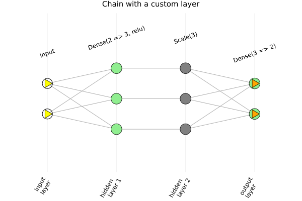
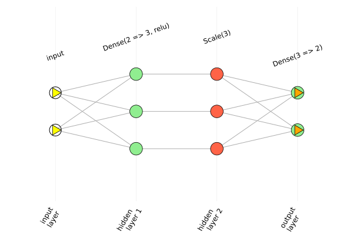
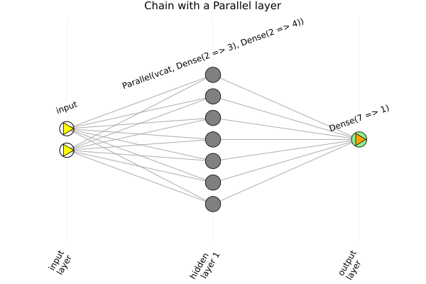
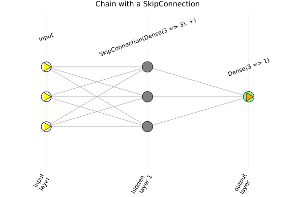
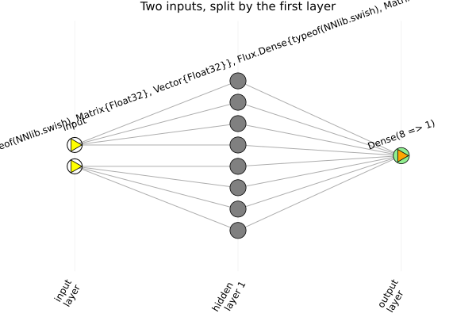

Custom layers
ChainPlots works out the connections between neurons by running each layer on inputs made of NeuralNumbers.NeuralNumbers, which track which neurons a signal reaches. So any layer works, including your own, as long as
- it takes a single array and returns a single array, and
- it computes with generic Julia operations, so that it also runs on arrays of
NeuralNumbers. Its parameters are converted toNeuralNumbers with Functors.jl, as withFlux.@layer.
using Flux
using Graphs
using Plots
using ChainPlotsA custom layer
Here is a layer that scales each input by its own weight, so each neuron is only connected to the neuron in the same position:
struct Scale{T}
w::T
end
Flux.@layer Scale
(s::Scale)(x) = s.w .* x
Base.show(io::IO, s::Scale) = print(io, "Scale(", length(s.w), ")")
m = Chain(Dense(2 => 3, relu), Scale(rand(Float32, 3)), Dense(3 => 2))
plotchain(m, title = "Chain with a custom layer", titlefontsize = 10)
The layer is labeled with its show method, which is why Scale has one here: the default one prints all the weights.
Custom layers are drawn with the :Any color and marker. To give a layer type its own color, pass neuron_colors with an entry for the name of the type:
plotchain(m, neuron_colors = merge(ChainPlots.NEURON_COLORS, Dict(:Scale => :tomato)))
Container layers
Flux's container layers, such as Parallel and SkipConnection, are handled the same way. As they accept inputs of any size, an input, or its shape, is needed:
m = Chain(Parallel(vcat, Dense(2 => 3), Dense(2 => 4)), Dense(7 => 1))
plotchain(m, (2,), title = "Chain with a Parallel layer", titlefontsize = 10)
m = Chain(SkipConnection(Dense(3 => 3), +), Dense(3 => 1))
plotchain(m, (3,), title = "Chain with a SkipConnection", titlefontsize = 10)
Models with several inputs
A model whose input is a tuple or a vector of arrays, such as a layer that applies a different Dense to each of several inputs, is not supported, since each layer of a ChainGraph is a single array of neurons. Such a model can be drawn by writing it so that it takes a single array and splits it itself:
struct Split{T}
parts::T
end
Flux.@layer Split
(s::Split)(x) = vcat(s.parts[1](x[1:1]), s.parts[2](x[2:2]))
m = Chain(Split((Dense(1 => 4, swish), Dense(1 => 4, swish))), Dense(8 => 1))
plotchain(m, (2,), title = "Two inputs, split by the first layer", titlefontsize = 10)
Each input then only reaches the neurons of its own Dense layer:
cg = chaingraph(m, (2,))
nodeprop.(Ref(cg), neighbors(cg, 1), :index_in_layer), nodeprop.(Ref(cg), neighbors(cg, 2), :index_in_layer)([(1,), (2,), (3,), (4,)], [(5,), (6,), (7,), (8,)])